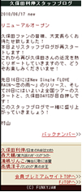

Funky Jam モバイルサイト 会員向けコンテンツがオールキャリア向けにオープン！！
アーティストの最新情報を携帯からチェックできるFunkyJamモバイルサイトにコンテンツ満載会員ページが登場しました! 是非お楽しみください！！
情報量 315円（税込・通信料別途）／月額
メニューリストからのアクセス方法
docomo ついに待望のdocomo向けも正式OPEN！
メニューリスト＞芸能/グラビア/お笑い＞ 芸能プロダクション
au[EZweb]
カテゴリ（メニューリスト）＞音楽・映画・芸能＞芸能プロダクション
SoftBank
Yahoo!ケータイ ＞ メニューリスト ＞ 芸能・映画・音楽 ＞ プロダクション・総合
久保田本人によるRecommendコーナー No Diggity
NO Diggity＝間違いない！と久保田利伸本人が今オススメのCD、LIVE、DVDなどジャンルに拘らず紹介するRecommendコーナーです。時には写真も掲載します！是非チェックしてみて下さい！
初のファン参加型コーナー 久保田利伸の「そのセリフ、いただきましたっ！」
お題となる久保田利伸の写真にピッタリなセリフを考えて、ご応募頂くコーナーです。ご応募頂いた中から、これはおもしろい！と久保田本人が選んだセリフを着ボイスにして後日配信させて頂きます！さあ、あなたのセリフが着ボイスになるチャンスです！！
各アーティスト毎にコンテンツが盛り沢山！
注目のコンテンツ内容はこちら！
着ボイス
♪電話着信音やアラーム音をはじめ、季節限定のスペシャルメッセージなど
ここでしか手に入らないボイスをお届け！誰の声で起きるかはあなた次第です！
スタッフブログ

久保田利伸のライブ、イベントのレポートはもちろん、ここでしか見れない、読めない、最も身近なスタッフの裏話ブログをリアルタイムで更新中。
大好評のうちに終了した久保田利伸全国ツアー”Timeless Fly”の舞台裏から打ち上げの様子までのレポートもバックナンバーからご覧いただけます！
オフショット
ファンキー・ジャムモバイルサイトでしか見られない貴重なオフショットがいっぱい！
事務所で打ち合わせ中やミュージックビデオ撮影中の久保田や、レコーディング中の森の素顔をお届けします。
普段は見られない顔が見られるかも！？
待受け画像
ファンキー・ジャム所属アーティストのかっこいい待受け画面をお届けします。
写真だけでなく、時計付きのFlash待受けまで！
あなたの携帯を開くたびに、久保田が！森が！微笑みます。
絵文字
久保田利伸ファンクラブBARI BARI CREWの会報でおなじみ
島かおりがモバイルサイトの為に書き下ろすメールデコレーション絵文字。
かわいい久保田や浦嶋の絵文字で、素敵にメールをデコレーション！
アーティスト本人コーナー
アーティスト本人によるコーナーです。それぞれ個性溢れる企画を不定期に更新します。
アーティストをより身近に感じて頂けるプレミアムメニューならではのコーナーです！
|
NO Diggity
NO Diggity＝間違いない！と久保田利伸本人が今オススメのCD、LIVE、DVDなどジャンルに拘らず紹介するRecommendコーナーです。時には写真も掲載します！ |
|
森大輔の撮って出し！
森大輔の眼で見た面白いものを、自身撮影の写真と共にご紹介するコーナーです。
森の眼に映る世界をお楽しみください！ |
|
いっとくやんかい！自腹かい！！
浦嶋りんこが体とお財布を張っておもしろスポットをリポートします！
「こんなところをリポートして！」などリクエストにもどしどしお応えしていきます！
第１回の久保田利伸ライブレポートもバックナンバーでお読み頂けます。 |
久保田利伸の「そのセリフ、いただきましたっ！」
初のtwitterと連動したファン参加型コーナーです！
お題となる久保田利伸の写真にピッタリなセリフを考えて、ご応募頂きその中から、これはおもしろい！と
久保田本人が選んだセリフを着ボイスにして後日配信させて頂きます！
さあ、あなたのセリフが着ボイスになるチャンスです！！
週刊ワタル自身
ファンの間ではもはや伝説となった、週刊ワタル自身がファンキー・ジャムモバイルに帰ってきた！
独特の目線で伝えるワタル的物語。あなたもクセになること間違いなし！